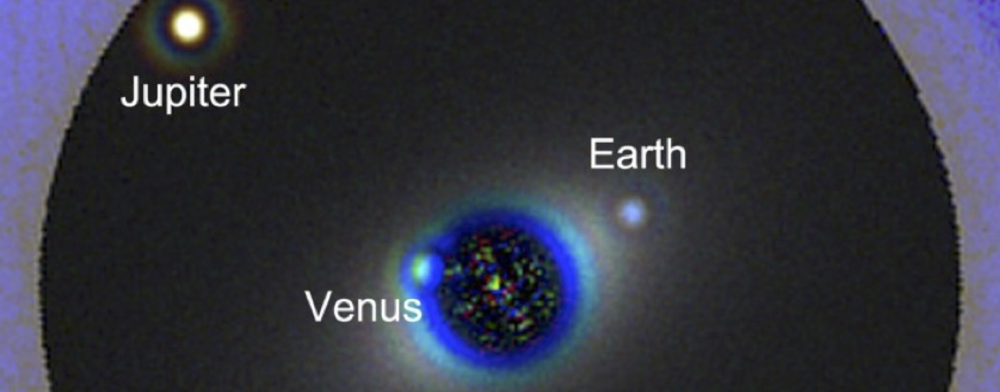
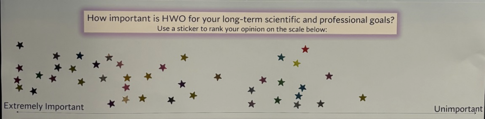
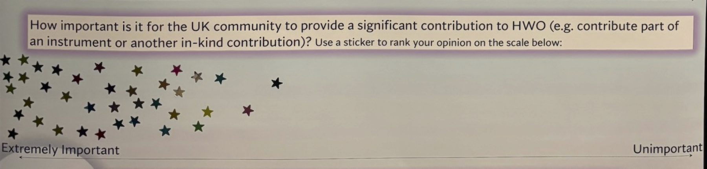
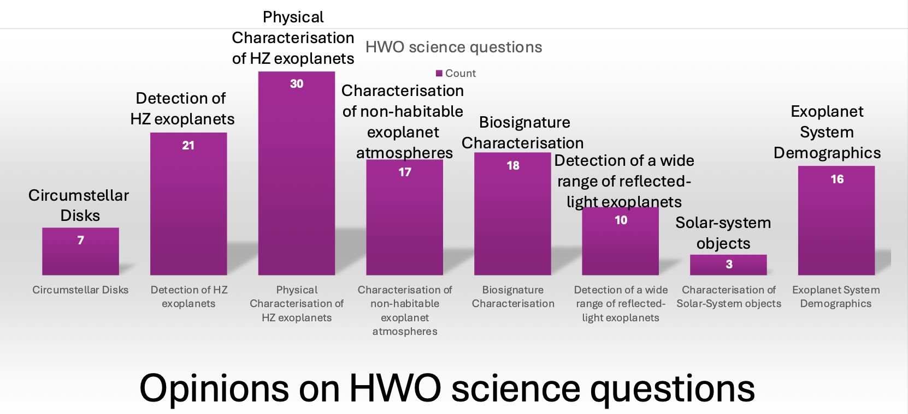

UK exoplanet community's interest in HWO
This page contains information about the Habitable World Observatory mission, and a possible UK participation. This page is also to gauge and reveal community interest in a UK participation to HWO.

The Habitable Worlds Observatory (HWO) is set to be the successor to the Hubble Space Telescope and to the James Webb Space Telescope. It is the telescope likely to yield the first images and biosignature detections from habitable zone exo-Earth twins and will also have a broad impact across all fields of Astrophysics. The mission is led by NASA, but other space agencies (including ESA, and hopefully UKSA) will likely buy in at some (yet undetermined) level. In the last year, GOMaP (Great Observatory Mission and Technology Maturation Process) - START (Science, Technology, and Architecture Review Team) efforts have kicked off, with a wide range of working groups dedicated to further defining the telescope architecture and science cases for HWO. The GOMaP-START efforts, while open to international collaboration, are largely US-based and much of the eventual instrumentation for HWO will be built in the US. Three instruments are planned for HWO, with potential for a 4th. The UK has played a leading role in previous space missions by contributing key hardware – for instance, the MIRI instrument for JWST was built at the UK Astronomy Technology Centre and this contribution enabled UK scientists to play a driving role in JWST science. UK contributions to HWO instrumentation could help ensure a leading role for UK scientists in HWO science.

Who we are
We are a group of people interested in exoplanet science with HWO, and we want to ensure that the UK Exoplanet Community is well represented in the current ongoing discussions, as this may be important for potential future UK hardware/science involvement in the mission.
Suzanne Aigrain, Jo Barstow, Beth Biller, Jayne Birkby, Vincent van Eylen, Sasha Hinkley, Thaddeus Komacek, Annelies Mortier, Amaury Triaud, Hannah Wakeford
What is new?
In late 2025 and early 2025, we ran a survey into the community to gauge interest. In addition, we had an interactive poster at the UK Exoplanet Community meeting 2025 (UKEXOM2025) in Leeds, where participants were able to vote using stickers. Results from the survey are available in two formats (a few pictures extracted from these are show below)


